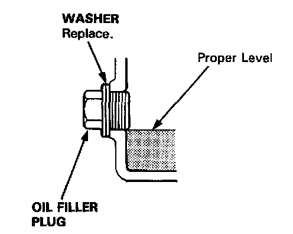
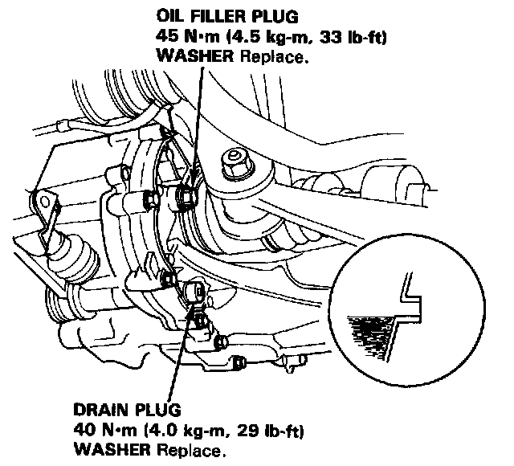

Fluid - M/T: Service and Repair
NOTE: Check the oil at operating temperature (the cooling fan comes on), with the engine OFF, and the car on level ground.
1. Remove the oil filler plug, then check the level and condition of the oil.
2. The oil level must be up to the filler hole. If it is below the hole, add oil until it runs out, then reinstall the oil filler plug.
3. If the transmission oil is dirty, remove the drain plug and drain the oil.
4. Reinstall the drain plug with a new washer, and refill the transmission oil to the proper level.
NOTE: The drain plug washer should be replaced at every oil change.

5. Reinstall the oil filler plug with a new washer.
Oil Capacity
2.2 l (2.3 US qt, 1.9 Imp qt) at oil change.
2.3 l (2.4 US qt, 2.0 Imp qt) at overhaul.
Use only SAE 10 W-30 or 10 W-40, SF or SG grade.